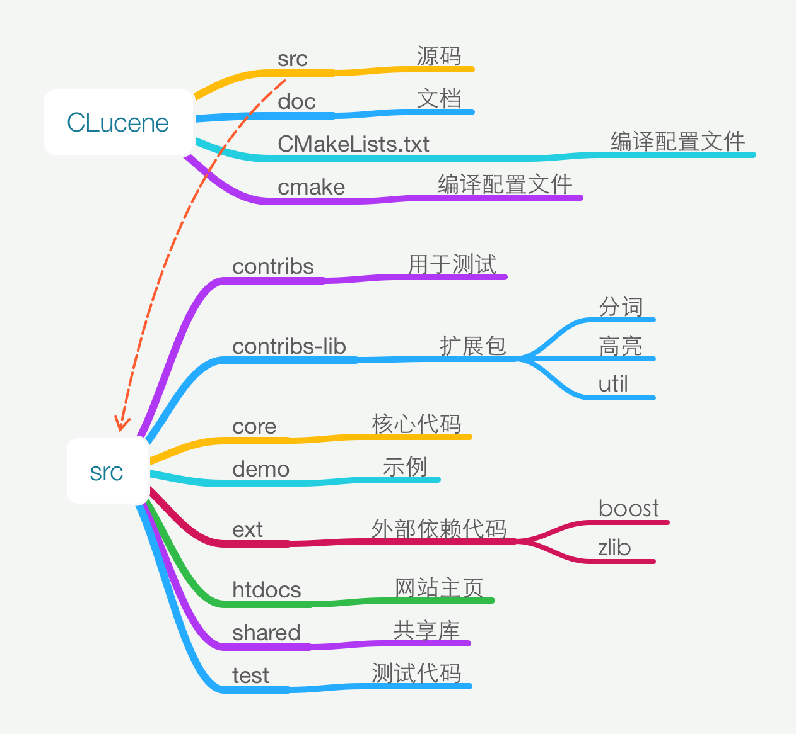
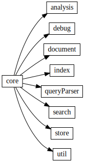
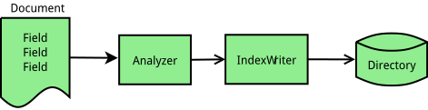
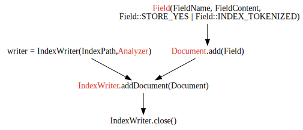
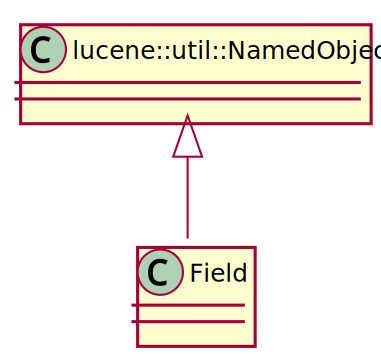
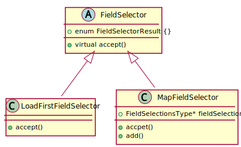
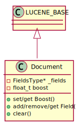
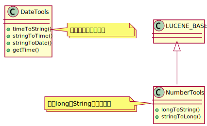
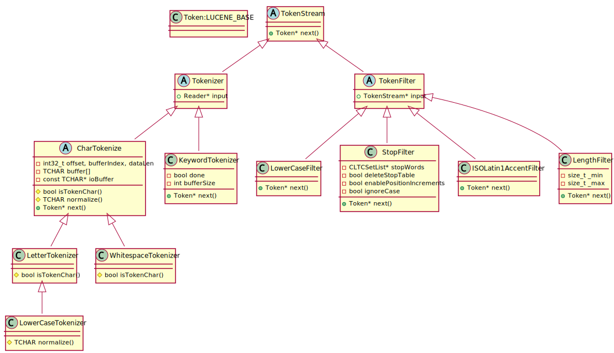
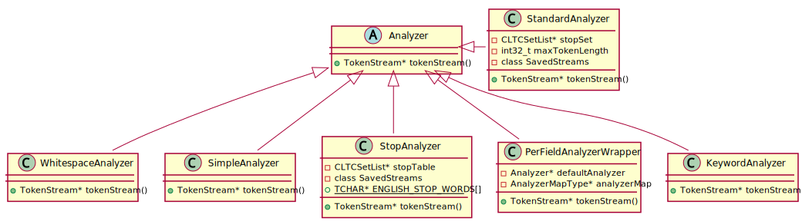

Lucene笔记
Table of Contents
CLucene代码结构

core目录示意图：

Lucene索引过程

索引代码示意图：

类
document
Field
域Field是文档Document的一节，每个Field包含两部分，名称name和值value。域可以是以String或Reader方式提供的文本，或是原子化的关键词。这些关键词可以表示日期，url等。Field可以保存在索引index中，这样它们有可能在查询时被命中。

- Enum说明
- Store
- STORE_YES：存储原始内容，不解析
- SOTRE_NO：不存储内容
- STORE_COMPRESS=4：以压缩后的形式存储域的内容，特别适用于长文档和值为二进制的域
- Index
- INDEX_NO=16：不索引该域，不能搜索，但如果STORE_YES仍可以获得该域内容
- INDEX_TOKENIZED=32：使用analyzer分析该域，并索引
- INDEX_UNTOKENIZED=64：不使用analyzer，并索引，适合查询唯一的Id如产品编号
- INDEX_NONORMS=128：索引，但不使用analyzer，并且不存储归一因子（norm）。
- 没有norm意味着不进行索引时提权和域长度归一化
- 优点是内存占用更小，因为对索引中文档的每个索引域需要一个字节来存储norm
- 如果开始建立索引时存储了norm，那么以后禁止norm将无效；也就是说如果要NO_NORMS生效，这个域的所有实例必须在最开始就使用NO_NORMS
- TermVevtor
- TERMVECTOR_NO=256：不存储词向量
- TERMVECTOR_YES=512,
- 存储每个文档的词向量（term vectors）。词向量是一个列表，存储文档的词项和词项在该文档中的出现次数
- TERMVECTOR_WITH_POSITIONS = TERMVECTOR_YES | 1024
- 存储词向量和每个token的位置信息
- TERMVECTOR_WITH_OFFSETS = TERMVECTOR_YES | 2048
- 存储词向量和token的偏置（offset）信息
- TERMVECTOR_WITH_POSITIONS_OFFSETS = TERMVECTOR_WITH_OFFSETS | TERMVECTOR_WITH_POSITIONS
- 存储词向量+token位置+token偏置信息
- Store
- FieldSelector
FieldSelector用于决定用IndexReader加载document时，文档的哪些field被加载。

Document
文档Document是索引和检索的基本单元。一个Document由一组域构成。

Tools

analysis
Token类图：

Analyzer类图：
